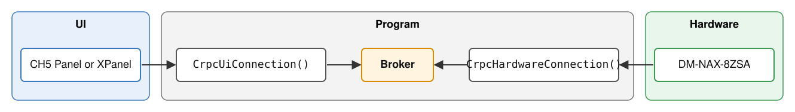
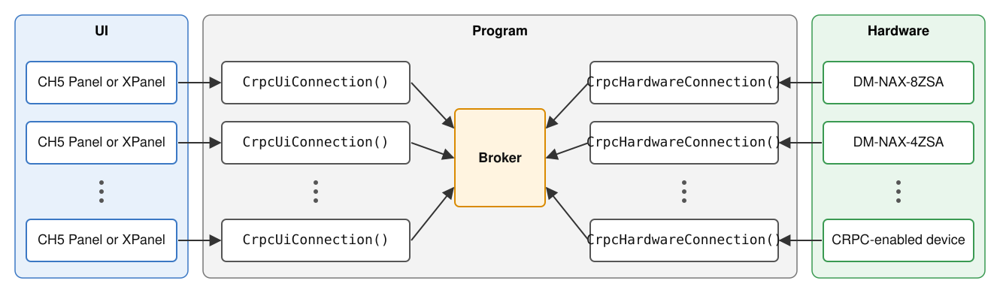

CrpcHardwareConnection and CrpcUiConnection| Project: | Masters2026Nax |
| Code: | Masters2026Nax/Crpc/CrpcHardwareConnection.cs, Masters2026Nax/Crpc/CrpcUiConnection.cs |
| Related: | Configuration/MediaPlayerId.cs, Configuration/NaxSourceConfiguration.cs, Hardware/HardwareSetup.cs, UI/UI.cs |
| Written against commit: | d9e7866 |
The CH5 Media Player object on a touch panel does not talk to the NAX streaming media players directly. Your program sits in the middle and has to do three things:
Two classes split this work. Each one handles one end of the conversation:
| Class | Where you create it | How many | What it does |
|---|---|---|---|
CrpcHardwareConnection |
HardwareSetup |
One per media server (one per device with one or more streaming media players, e.g. DM-NAX-8ZSA) | Listens for commands for each of the hardware's players and publishes their feedback |
CrpcUiConnection |
UI |
One per panel that has a CH5 Media Player object | Connects the panel to one player at a time, forwards commands, receives feedback, sends source-change messages |
The two classes never reference each other. They only share the Message Broker
keys, and those keys come from MediaPlayerId.


Three things to remember:
CrpcHardwareConnection subscribes to every
player's command key in its constructor and never unsubscribes.CrpcUiConnection subscribes to one player's
feedback key when you call Connect. It unsubscribes when you connect to a different player,
call Connect(null), or call DisconnectAsync.MediaPlayerId: the address of a playerEvery hardware media player is identified by a MediaPlayerId. It has two parts:
var player = new MediaPlayerId("Nax1", 1); // Player 1 on the hardware called "Nax1"
| Member | Example value | Used by |
|---|---|---|
HardwareId |
"Nax1" |
Must match the hardware ID given to CrpcHardwareConnection |
PlayerNumber |
1 |
Which player on that hardware |
CommandKey |
"MediaPlayer[Nax1.Player1]Crpc" |
UI sends to this key; hardware listens to this key |
FeedbackKey |
"MediaPlayer[Nax1.Player1]CrpcFb" |
Hardware sends to this key; UI listens to this key |
ToString() |
"Nax1.Player1" |
Log messages, and the player name shown on the panel |
Why it matters to you:
MediaPlayerId for CommandKey or
FeedbackKey. A typo in a hand-typed key fails silently.record, so two MediaPlayerId objects with the same HardwareId and PlayerNumber
are equal (== returns true). CrpcUiConnection uses this to tell whether you're reconnecting
to the player you're already on.HardwareId throws ArgumentException at startup. That's on purpose: it's better to
fail quickly and loudly than to have CRPC quietly go nowhere later.You give each media-player source its MediaPlayerId in ControlSystem.SetupNaxSources():
NaxSourceConfiguration.AddSource(zone1, "Media Player 1", 9, "", new MediaPlayerId("Nax1", 1));
CrpcHardwareConnectionIn HardwareSetup, after you create the hardware wrapper:
myNaxamp = new NaxAmp(0x10, naxHardwareId, cs);
ushort naxPlayerCount = 8;
myCrpcHardwareConnection = new CrpcHardwareConnection(
myNaxamp.HardwareId, // 1. Unique name for this hardware, e.g. "Nax1"
naxPlayerCount, // 2. How many players it has
(playerNumber, crpcPayload) => // 3. How to send a CRPC command to the real hardware
{
myNaxamp.SendCrpc(playerNumber, crpcPayload);
});
| Parameter | Type | What to pass |
|---|---|---|
hardwareId |
string |
The same ID used in every MediaPlayerId for this hardware. Must be unique, and the check ignores case. |
playerCount |
ushort |
Number of players. CommandKeys are registered for players 1 through playerCount. |
sendCrpcToHardware |
CrpcHardwareConnection.SendCrpcToHardware |
A method or lambda that takes (playerNumber, crpcPayload) and sends it to the device. |
The class doesn't know what a NaxAmp is. You tell it how to talk to the hardware through the
callback. That's why the same class can work with a different brand of player later.
SendCrpcToHardware is a named delegate declared inside CrpcHardwareConnection:
public delegate void SendCrpcToHardware(ushort playerNumber, string crpcPayload);
| Argument | Meaning |
|---|---|
playerNumber |
1-based player number on this hardware (1 through playerCount). |
crpcPayload |
The serialized CRPC message from the panel. Forward it unchanged. |
To write the lambda: hover over the constructor's third parameter in Visual Studio (or press
Ctrl+Shift+Space while typing the call) to see the delegate's signature and docs. Your lambda
needs to take those two arguments and hand them to whatever method on your device class sends CRPC.
The parameter names in your lambda are up to you, but matching the delegate's names (playerNumber,
crpcPayload) keeps the code easy to compare with the docs.
(playerNumber, crpcPayload) =>
{
myNaxamp.SendCrpc(playerNumber, crpcPayload);
}
The same shape works as an expression-bodied lambda or a named method:
// Expression-bodied lambda
(playerNumber, crpcPayload) => myNaxamp.SendCrpc(playerNumber, crpcPayload)
// Named method (method group), if the signature matches exactly
private void SendToNax(ushort playerNumber, string crpcPayload) =>
myNaxamp.SendCrpc(playerNumber, crpcPayload);
// ...
new CrpcHardwareConnection(myNaxamp.HardwareId, 8, SendToNax);
The callback runs on the thread that delivers the UI's message, so keep it short and don't block.
Hook the device's CRPC feedback event to SendFeedback.
myNaxamp.CrpcMessageReceived += (sender, e) =>
{
myCrpcHardwareConnection.SendFeedback((ushort)e.Player, e.CRPCMessage);
};
SendFeedback(playerNumber, crpcPayload) puts the payload on that player's FeedbackKey.
If no panel is connected to the player, the message is simply dropped. That's normal and is not logged.
hardwareId (including "nax1" vs "Nax1") throws ArgumentException at startup.hardwareId must exactly match the HardwareId in your MediaPlayerId configuration.
If they don't match, the UI's commands go to a key nobody is listening on (see Troubleshooting).CrpcHardwareConnection only listens on players 1
through playerCount, so a MediaPlayerId with PlayerNumber 0 never reaches the hardware.
If you add a device whose players are numbered from 0, still number its MediaPlayerIds from 1,
translate in your callback (for example,
(playerNumber, crpcPayload) => device.Send(playerNumber - 1, crpcPayload)), and translate back
when you call SendFeedback.// In HardwareSetup. Use an IP ID that isn't already in use.
myNaxamp2 = new NaxAmp(0x12, "Nax2", cs);
myCrpcHardwareConnection2 = new CrpcHardwareConnection(
myNaxamp2.HardwareId,
8,
(playerNumber, crpcPayload) => myNaxamp2.SendCrpc(playerNumber, crpcPayload));
myNaxamp2.CrpcMessageReceived += (sender, e) =>
myCrpcHardwareConnection2.SendFeedback((ushort)e.Player, e.CRPCMessage);
Then add its players as sources in ControlSystem.SetupNaxSources():
NaxSourceConfiguration.AddSource(zone1, "Media Player B2", 10, "", new MediaPlayerId("Nax2", 1));
You don't need to change anything in UI or CrpcUiConnection.
CrpcUiConnectionIn the UI constructor:
myCrpcMediaPlayerConnection = new CrpcUiConnection(
message => myContract.MediaControl.MediaPlayer.MediaPlayer_Message_FB(message), // source-change messages
crpc => myContract.MediaControl.MediaPlayer.MediaPlayer_CRPC_FB(crpc)); // CRPC feedback
| Parameter | Type | What to pass |
|---|---|---|
sendMessageFbToUi |
CrpcUiConnection.SendMessageFbToUi |
Sends a string to the Media Player's Message_FB input |
sendCrpcFbToUi |
CrpcUiConnection.SendCrpcFbToUi |
Sends a string to the Media Player's CRPC_FB input |
The class doesn't need to reference the Construct contract. It only calls the two callbacks you give it, which keeps the generated contract types out of the CRPC code.
Both are named delegates declared inside CrpcUiConnection, each taking a single string:
public delegate void SendMessageFbToUi(string message); // source-change message (JSON)
public delegate void SendCrpcFbToUi(string crpcPayload); // CRPC feedback from the hardware player
Each lambda's only job is to write that string, unchanged, to the matching Media Player input in your panel's generated contract. In this project that's:
message => myContract.MediaControl.MediaPlayer.MediaPlayer_Message_FB(message)
crpc => myContract.MediaControl.MediaPlayer.MediaPlayer_CRPC_FB(crpc)
The two are easy to swap by accident, and the compiler can't tell because both take a string.
The first parameter is always the source-change channel (Message_FB); the second is always the
CRPC channel (CRPC_FB). If the Media Player never connects, check the order first.
If your panel's contract names the Media Player differently (for example a second Media Player
object, or a different contract path), only these lambdas change. CrpcUiConnection stays the same.
Each instance assigns itself an instance ID (1, 2, 3…) in the order the panels are created. The
Media Player uses that ID as the tag in the source-change message. You don't set it yourself.
| Method | Call it when… | What it does |
|---|---|---|
Connect(MediaPlayerId?) |
The user picks a source that is a media player | Sends the source-change message, then subscribes to that player's feedback |
SendCommand(string) |
The panel's Media Player sends CRPC | Forwards the CRPC to the connected player |
DisconnectAsync() |
The user leaves the player, picks a non-player source, or the panel goes offline | Sends "source 0", waits 200 ms, then unsubscribes |
Every Connect should eventually be matched by a DisconnectAsync.
There are five call sites in UI.cs. A new panel class needs the same five.
1. Panel sends CRPC → SendCommand
myContract.MediaControl.MediaPlayer.MediaPlayer_CRPCEvent += MediaPlayer_MediaPlayer_CRPCEvent;
private void MediaPlayer_MediaPlayer_CRPCEvent(object sender, UIEventArgs e)
{
myCrpcMediaPlayerConnection.SendCommand(e.SigArgs.Sig.StringValue);
}
2. User selects a media-player source → show the page, then Connect
if (NaxSourceConfiguration.IsMediaPlayer(zone, buttonIndex))
{
myContract.MediaControl.VisibilityJoin(true); // show the Media Player page first
myContract.MediaControl.VisibilityJoin(false);
var mediaPlayer = NaxSourceConfiguration.GetMediaPlayer(zone, buttonIndex);
myCrpcMediaPlayerConnection.Connect(mediaPlayer);
myContract.MediaControl.MediaPlayer.MediaPlayer_Offline(false);
myContract.MediaControl.MediaPlayer.MediaPlayer_Player_Name(mediaPlayer.ToString());
}
3. User selects a source that is not a media player → DisconnectAsync (fire and forget)
else
{
_ = myCrpcMediaPlayerConnection.DisconnectAsync();
}
4. User presses Return on the Media Player page → await DisconnectAsync, then flip the page
private async void MediaControl_ReturnBtn_PressEvent(object sender, UIEventArgs e)
{
if (e.SigArgs.Sig.BoolValue)
{
await myCrpcMediaPlayerConnection.DisconnectAsync(); // waits ~200 ms
myContract.Main.VisibilityJoin(true); // now leave the page
myContract.Main.VisibilityJoin(false);
}
}
5. Panel goes offline → DisconnectAsync
else // !args.DeviceOnLine
{
_ = myCrpcMediaPlayerConnection.DisconnectAsync();
}
Connect does, step by stepsrc number from NaxSourceConfiguration (or uses 0 if you pass null),
which is used in the following step.{"ver":"4.0.0","tag":"01","src":"3"}, and sends it
through sendMessageFbToUi.FeedbackKey.Passing null sends src 0 and leaves the panel unsubscribed.
DisconnectAsync does, step by stepsrc 0 while the Media Player page is still open.Task.Delay) so the panel's Media Player can process it. 200 ms was found by testing.Known limitation: step 4 can't tell "still connected" from "reconnected to the same player during the 200 ms." If
Connectis called with the same player during the delay, it skips resubscribing, andDisconnectAsyncstill unsubscribes. The Media Player stays open with no feedback. This project's UI can't trigger it, because source buttons are only on the Main page and Return awaitsDisconnectAsyncbefore flipping to Main. A layout that shows source buttons next to the Media Player could hit it if the user presses two sources within 200 ms.
If the Media Player page closes before the panel processes the "src 0" message, the panel's player
can end up in the wrong state. Then it may not connect properly the next time, especially to a
different player. That's why the Return button awaits DisconnectAsync before the page flip,
instead of using a hard-coded page flip in Construct.
A future update to the CH5 Media Player may eliminate the need for this workaround.
In ControlSystem, declare a field next to the existing panels, then create the panel in
InitializeSystem():
// With the other fields
UI? myThirdXpanel;
// In InitializeSystem(), with the other panels
myThirdXpanel = new UI(0x05, this);
Each UI creates its own CrpcUiConnection, so the new panel gets its own instance ID and
subscriptions automatically. Nothing changes on the hardware side.
src)The Media Player needs a src number for each player. NaxSourceConfiguration assigns them for you:
AddSource.MediaPlayerId is a record).0 means "no source."AddSource gets 0.Don't hard-code src numbers. Always let GetMediaPlayerSrc look them up.
| You see | Meaning | Fix |
|---|---|---|
Startup ArgumentException: A CrpcHardwareConnection with hardwareId 'X' already exists… |
Two hardware connections share an ID (case is ignored) | Give each device a unique ID |
Startup ArgumentException: A media player needs a HardwareId… |
A MediaPlayerId was created with a blank hardware ID |
Fix the configuration in InitializeSystem() (HardwareSetup instantiation) or SetupNaxSources() |
| Error: UI instance N: no hardware is listening for Nax2.Player1… | The UI sent a command to a key with no subscriber | Check that the ID's spelling matches HardwareSetup, and that the player number is ≤ playerCount |
| Info: …received a CRPC message… but no media player is currently connected. Message ignored | The panel sent CRPC while disconnected | Usually harmless (timing at page close). If constant, check that Connect is being called. |
| Notice: UI instance N connected to …CrpcFb, but the panel's player stays blank | Probably src is 0 because the player wasn't added with AddSource |
Add the player to the source configuration |
| Player works the first time but not after switching players | The page was flipped before the source-change message was processed | await DisconnectAsync() before the page flip |
| Info: …is not connected to a media player. No disconnect action taken. | DisconnectAsync called while already disconnected |
Normal. No action needed. |
These are worth understanding before you change the code.
| Idea | Where | Why it's used |
|---|---|---|
Named delegate callbacks (SendCrpcToHardware, SendMessageFbToUi, SendCrpcFbToUi) |
Both constructors | The CRPC classes don't need to know about NaxAmp or the Construct contract. You pass in how to send. |
| Lambda vs. named method | CrpcHardwareConnection uses a lambda; CrpcUiConnection uses ForwardCrpcFbToUi |
You can only remove a delegate from the broker if you pass the same method again. Lambdas are fine for subscriptions that are never removed. |
Lambda capture in a for loop |
CrpcHardwareConnection constructor |
A lambda captures the variable, not its value. Each pass creates a local MediaPlayerId (mediaPlayer), and the lambda reads mediaPlayer.PlayerNumber instead of the loop variable, so each lambda gets its own copy. |
record equality |
MediaPlayerId |
== compares contents, so "is this the same player?" is one line. |
static fields |
instanceCount, usedHardwareIds |
Shared by all instances. Used for unique UI instance IDs and duplicate hardware-ID detection. |
Nullable references (MediaPlayerId?) |
CrpcUiConnection |
null has a real meaning: "not connected." |
async Task + await Task.Delay |
DisconnectAsync |
Waits 200 ms without blocking the panel's event thread (it replaced Thread.Sleep). |
async void |
Return button handler | Only for event handlers, which can't return Task. Everywhere else, use async Task. |
_ = SomethingAsync(); |
Source select, offline handler | "Start this and don't wait for it." The _ = tells the reader (and the compiler) that you meant not to await it. |
Do
MediaPlayerId.CommandKey / FeedbackKey.CrpcHardwareConnection per device and one CrpcUiConnection per panel.Connect.await DisconnectAsync() before flipping away from the Media Player page.Don't
Broker.AddDelegate / SendMessage with CRPC keys yourself. Let these classes do it.CrpcHardwareConnection for the same hardware.CrpcUiConnection between panels.src numbers or broker key strings.Thread.Sleep to wait for the Media Player. It blocks the panel's event thread.